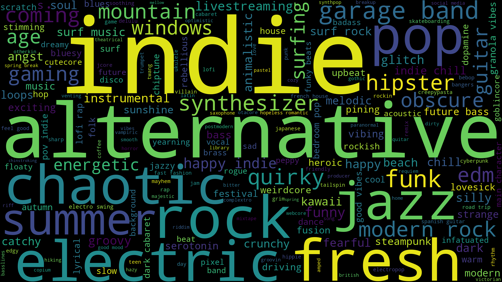

What Spotify Tags are Most Common for Me
My favorite music streaming service is Spotify. It has so many benefits that I could go over, but something I really enjoy is the Daylist. Spotify creates a custom play list that gets refreshed 4 times per day. Personally enjoying some variance in the music I listen to I often would listen to these playlists.
After a while I haad realised it shows what tags are actually used to generate the playlist. I thought about it and decided. I should catalogue all of the tags I get. This led me down year long project where everytime I listened to the daylist I took a picture of the daylist.
Recently I noticed that I had a little over 500 pictures of the daylist, and I should put the tags into a dataset so I could analyze what I listend to. This was quite the task, I didn't want to manually read and count the tags of each picture so I decided to create a script to do it for me.
Project Method
To extract the text and put it into a dataset: I took every image ran it under preprocessing, fed it to pytesseract to extract text, parsed out the tags, and created a json file with the title of the dyalist and the tags (if multiple days had the same name the tags had an incrementing number to represent multiple).
Initial Image
Here are a few examples of what the screenshot I took look like. You can see some of the tags are underlined and highlited green while some are not. I'm not sure what determines this but it is noticible.

Image PreProcessing
To makesure pytesseract is able to read the images, I ran them against a threshold, scaled them and inverted them to be black text white background.
Parsing
when the image was ran through pytesseract it output all the text on the page which was more than i needed. Just wanting the tags at the bottom I created an algorithm to run the text through to extract tht tages and title into a json to eventually end up with this.
"synthesizer beach house tuesday morning": [
[
"synthesizer",
"beach house",
"majestic",
"nu disco",
"infatuated","remix"]]
"mellow mountain late night": [
[
"mountain",
"mellow",
"granola vibes",
"indie chill",
"crunchy",
"hiking"]]
"indie chill alternative evening": [
[
"alternative",
"indie chill",
"windows down",
"warm",
"chill rock",
"hipster"]]Final Thoughts
After completing this project I had lots of fun loking at the different graphs and trends that I could see. It was fun to see what I listened to most commonly some of the weirder genres that popped up. My favorite data model I created from this was actually a word cloud that is below. Finally I don't recomend using the same method I did to get all this data. It took forever and I definitely forgot to take some pictures some days.
Also here is a song I found on spotify recently that I enjoy listening too, for the media requirements for this project.
